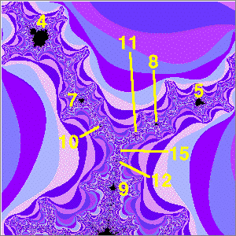
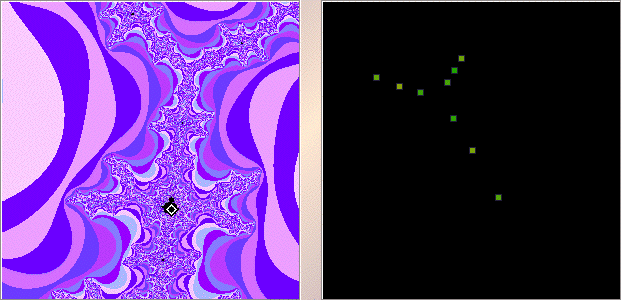

| 1. (a) Here is what we find. |
|  |
| The largest midget on the left branch has cardioid with cycle number 4. Going toward the point where the antenna spokes meet, we find 7 and 10. |
| The largest midget on the right branch has cardioid with cycle number 5. Going toward the point where the antenna spokes meet, we find 8 and 11. |
| The largest midget on the bottom branch has cardioid with cycle number 9. Going toward the point where the antenna spokes meet, we find 12 and 15. |
| Patterns |
|
|
|
| A reliable way to find the cycles is to first magnify the midget Mandelbrot set sufficiently to be sure the pointer is in the cardioid, then shift-click or right click. The right window shows the cycle to which the iterates of 0 converge. |
|  |
Return to Exercises.